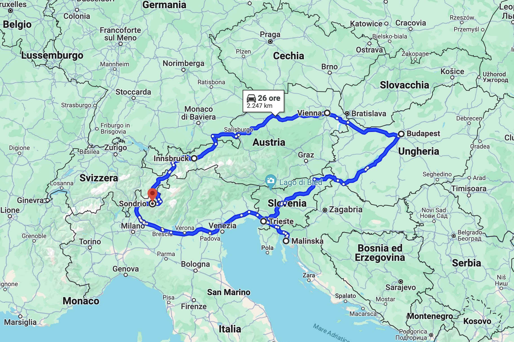
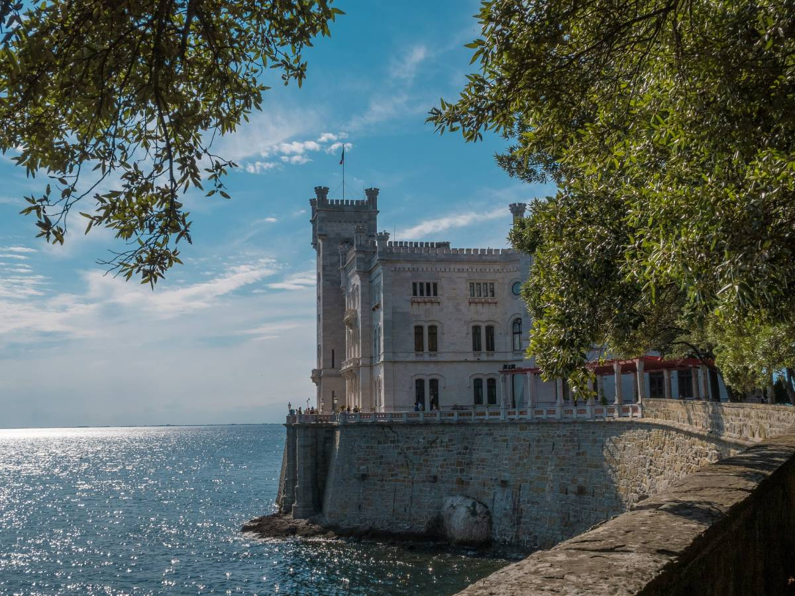
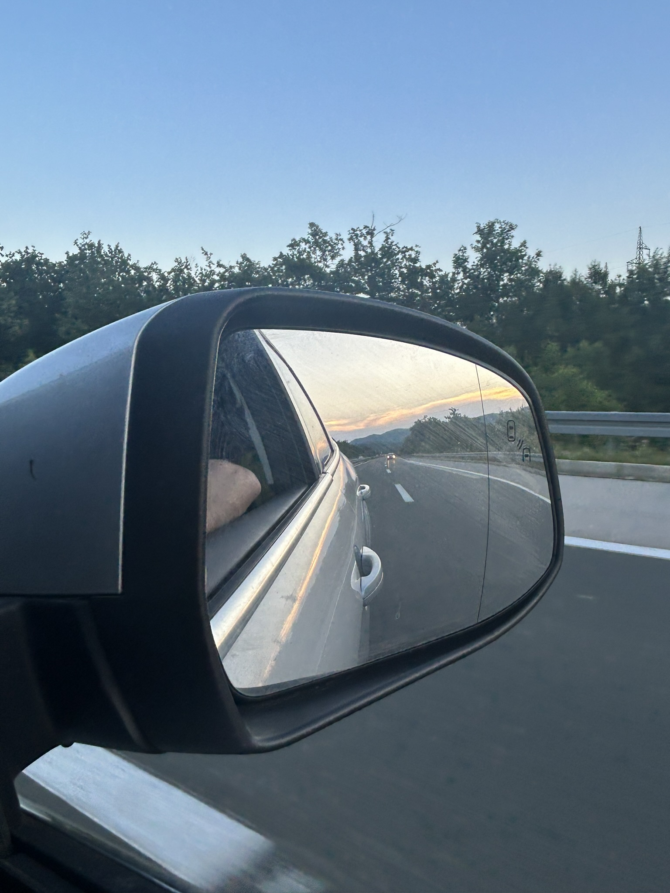
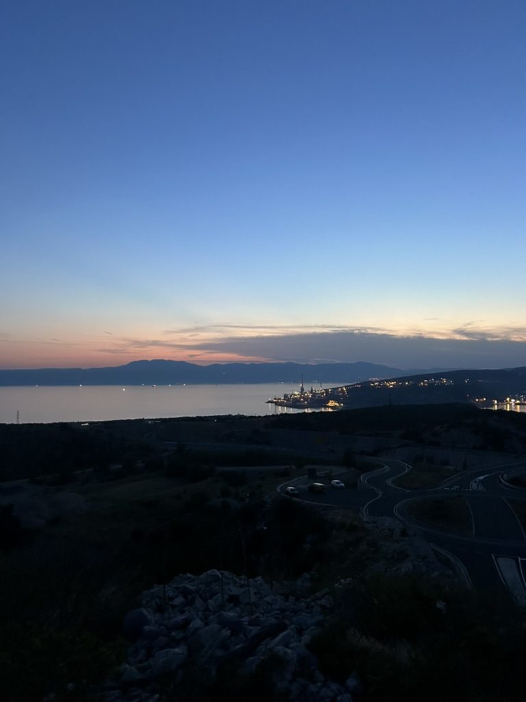
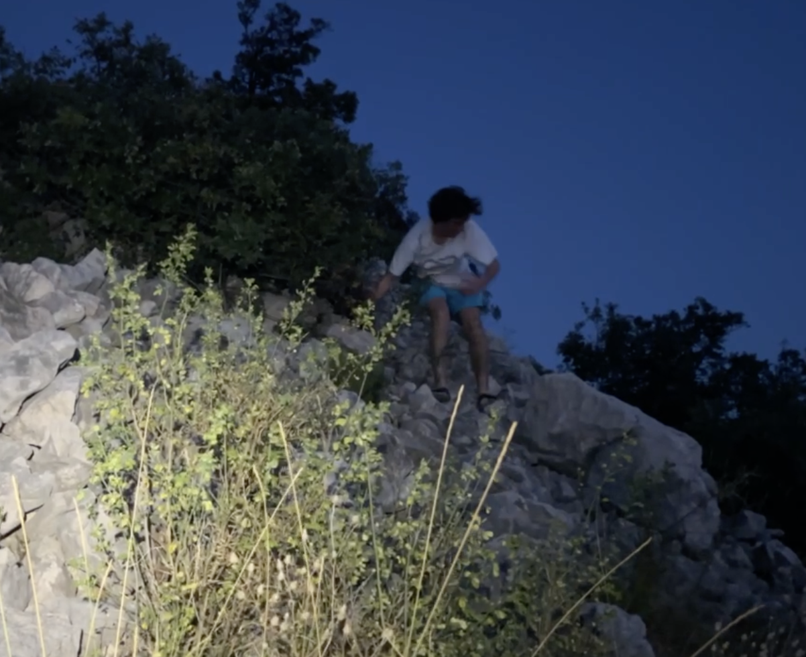
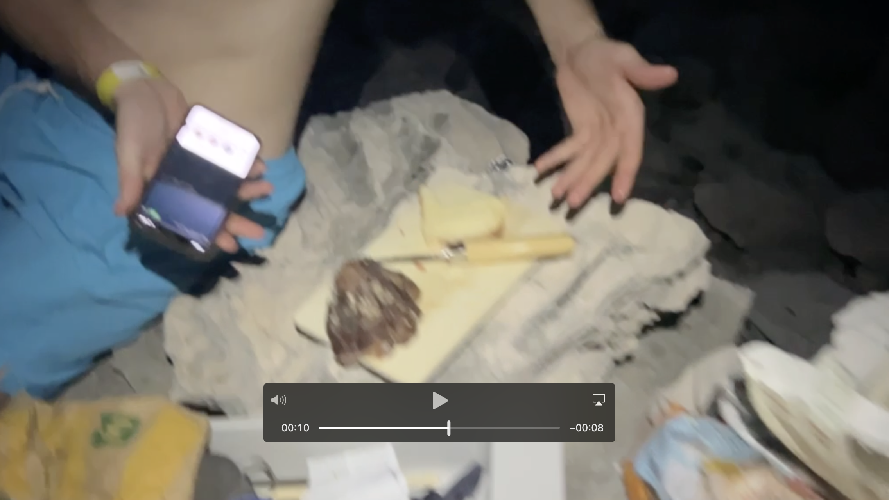
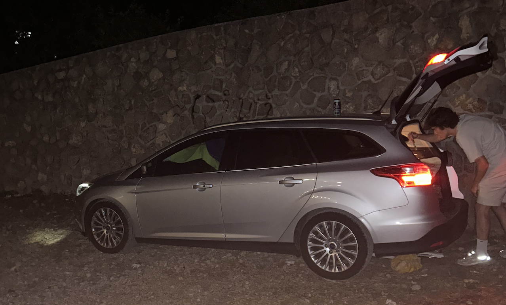
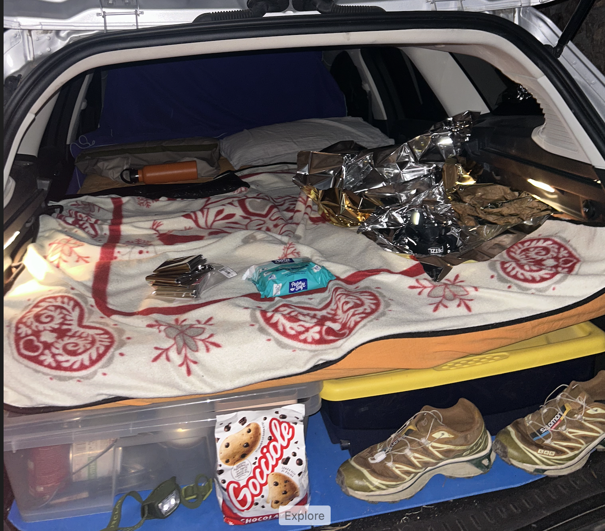
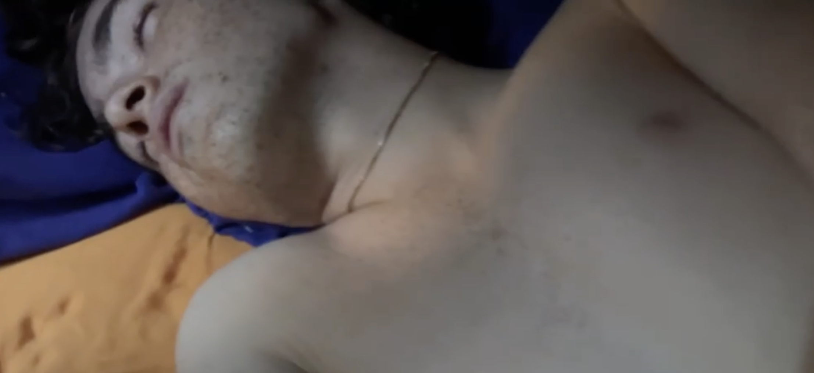

Quando gli ELLE vogliono fare un roadtrip
Il mio socio Lorenzo Cattone (da ora in poi ELLE) martedì 23 luglio 2024 ha avuto l’idea di propormi un viaggio in macchina attraverso l’Europa. Il suo piano iniziale prevedeva un enorme itinerario che costeggiava praticamente tutti i paesi europei, con una media di 6 ore al giorno in auto e un totale di circa 5000 km. Abbiamo poi ridimensionato il tutto, considerando anche che avevamo solo una settimana di tempo per organizzare il viaggio. Alla fine è venuto fuori questo ( non male):

Fatto sta che mercoledì 31 agosto alle 7:20 ci troviamo in macchina con BBE di Anna Pepe e un pieno di gasolio. Prima poi uscirà anche un video.
Day 1: Sondrio → Trieste → Malinska
Nessuno dei due aveva mai sperimentato il viaggio senza prenotazioni, era una questione di sopravvivenza che già la prima notte è stata messa duramente alla prova. Ci mettiamo in moto con prima destinazione Trieste nel navigatore, il viaggio procede in modo super liscio. Una piccola incazzatura al casello dell’autostrada che ci da una botta di 40 euro in pedaggio (noi ignoranti sulla cosa) e raggiungiamo la costa Adriatica. Ci fermiamo a qualche km da Trieste città in prossimità del castello di Miramare e una specie di spiaggia fatta di sassi artificiali. Quel giorno eravano molto carichi e quindi decidiamo di visitare pure il castello (in generale sono cose un po’ contro la nostra natura), già qualche figura di merda con gli stranieri con i quali facevamo i fighi dicendo a voce alta “bravi fate foto che non avete una cultura” e poi li sentiamo parlare un italiano impeccabile. Il castello ci soddisfa in una decina di minuti, avevamo più voglia di fare una puciata nel mare.

Riprendiamo la macchina e ci dirigiamo ancora più vicini alla città, dove penso tutti gli abitanti vadano a fare il bagno in quando il mare di Trieste città è proprio da rivedere. Parcheggiamo. Per fortuna che un paio di giorni prima eravamo andati a comprare una tanica di 10 L che ci ha permesso di assetarci da quel caldo atroce che, come vedremo successivamente, sarà il protagonista della giornata. Facciamo un bagno delizioso che ci toglie dalle due dita di sudore sulla pelle, prendiamo un gelatino e siamo come nuovi. Ora tocca vedere la Trieste city. Riprendiamo la macchina e ci spostiamo in un parcheggio proprio sul mare nel centro città, comodissimo. Iniziamo a girare completamente alla caso. Trieste è una città di porto ma abbastanza classica per chi ha girato un po’ le città italiane, si ha un che di sorpresa ma non troppo. Iniziamo ad andare in crisi. Dopo circa 2h nella città ormai avevamo girato tutto il centro e quindi decidiamo abbattuti da Trieste di dirigerci subito in Croazia. Mi dimenticavo di dire, il piano originale era quello di fermarsi da qualche parte nei pressi di Trieste in campeggio, dato che eravamo dotati di una tenda. Qua abbiamo tirato una goduta di non aver prenotato nulla. Risaliamo in macchina e super gasati riprendiamo il viaggio.
Sfondiamo il confine sloveno, si passa per una bellissima e strana foresta a 600mt sul mare. Inizia pure a tramontare il sole e con #fuoric’èilsole di Lorenzo Fragola ci apprestiamo ad arrivare in Croazia. Giustamente ci organizziamo per la nottata, chiamiamo un campeggio di Malinska che ci assicura un posto tenda.

Raggiungiamo i pressi del ponte per l’isola di Krk (Otok Krk), dove puntavamo di andare a Malinska. Erano già le 7 inoltrate, il pancino brontolava. La strada prima di raggiungere il ponte è abbastanza in alto a circa 200mt sul mare, durante uno svincolo vediamo 3 cose che si uniscono perfettametne con il nostro desiderio di cibo: parcheggio, cocuzzolo(per altri cucuzzolo), tramonto fotonico. Ci eravamo attrezzati per mangiare con fornelletto, pasta, sugo… così siamo totalmente indipendenti. Quindi, parcheggiamo la macchina e iniziamo a prendere le cose per salire su questa montagnetta di roccia, questa è la vistaaaaa:

Inizamo a cucinare, facciamo una pasta con il pesto e pistacchi, il tutto assaporando un pezzo di coppa che Elle aveva portato. Non volevamo niente di più dalla vita.

Questo è il pezzo di coppa che ci ha accompagnato dolcemente per 3 giorni:

Sbaracchiamo il tutto e facciamo per scendere dal cocuzzolo. Arrivamo al parcheggio, dove durante la nostr acena avevamo visto cose molto losche, ci aspetta un tipo con fari accessi e macchina spenta. Ci chiede cosa stavamo facendo con fare sospetto, noi proviamo a stordirlo con la nostra italianità “ciaoo, we are cooking pasta!”, lui ci risponde che quella era una zona di caccia e che era pericoloso per noi stare lì. Il cocuzzolo era proprio sulla strada quindi direi che piùc he una zona di caccia era una zona di spaccio cocaina. In ogni caso lui ci dice di andare via e noi andiamo, ci rimettiamo in macchina e proseguiamo sul ponte di Krk. Arriviamo quindi a Malinska, la seconda cittadina più grande di Krk. Ormai erano le 10 passate e noi ingenui volevamo entrare in campeggio, arrivati lì ovviamente non troviamo nessuno, solo crucchi che leggevano silenziosi dentro le tende. Capiamo di averla un po’ combinata, allora cerchiamo un posto dove poter dormire in macchina, avevamo recuperato a Sondrio un materasso che ci permetteva di dormire in macchina con i sedili posteriori abbassati. Finiamo in un losco parcheggio…

La notte si prospettava molto lunga.

Ancora illusi decidiamo di fare un giro per Malinska, prendiamo una birra in uno dei pochi bar aperti. Capiamo che Krk in generale non è nota per la vita notturna, incontriamo solo un gruppo di italiani frustrati e annoiati perché erano lì da una settimana. Alle 2:30 torniamo alla macchina per assettarci la notte. Date le esperienze strane della cena, era un parcheggio praticamente vuoto, ad un certo punto arriva uno ubriaco in macchina e inizia a fare sgommate, decidiamo di tenere chiusi i finestrini e tentiamo di fare stealth camping. Imbaccucchiamo la macchina e ci mettiamo dentro per addormentarci, capiamo subito l’errore fatale: in circa 20 secondi si inizia a creare una sorta di aria malsana con umidità estrema, in 40 secondi era ormai irrespirabile con temperature estreme. Non ci arrendiamo e sopravviviamo alla notte. Alle 5 veniamo svegliati da un pestaggio nel parcheggio, altre mille volte per il caldo o per persone che urlavano.
Day 2: Malinska → Šilo
Il sole sorge e cantiamo già vittoria! Elle dead:

Io mi sposto sul mare per continare a dormire a temperature decenti fino alle 9 circa, elle mi raggiunge e facciamo quindi colazione. La cosa bella è che incassiamo e capiamo i nostri errori: mai più una notte in macchina con temperature esterne superiori a 10 gradi… decidiamo quindi di trovare un campeggio per passare la seconda notte in pace, chiamiamo qualche numero ma l’unico che ci risponde è a circa 1h di macchina, in ogni caso decidiamo di andare e assettiamo il nostro accampamento.

Passiamo tutto il pomeriggio come cadaveri in spiaggia, pranziamo con